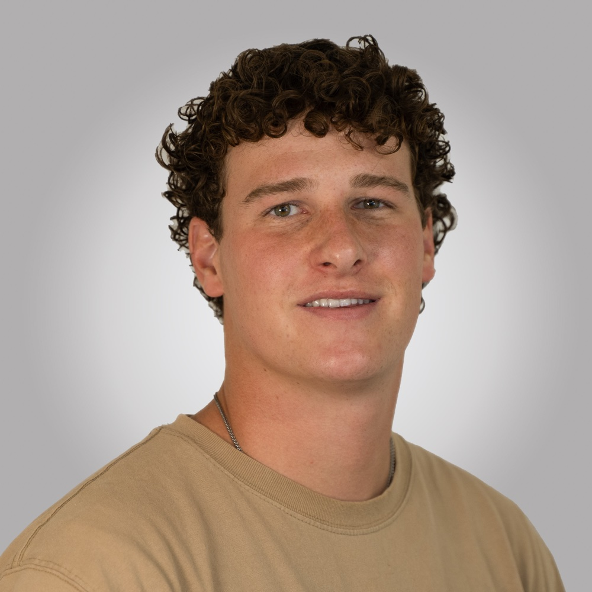

About
Finance, media, and the work between.

I'm Connor Peterson — a Pre-Business student at Brigham Young University on track for a finance degree (expected graduation April 2029). My interests sit at the intersection of capital markets and creative industries: how money flows through the business of storytelling, and what drives value in media at a structural level.
The finance interest isn't abstract for me. I've spent time building out an independent equity research thesis on IMAX Corporation — modeling a $57 price target with a ~16% three-year IRR — and won first place at the BYU Sunoco Case Competition in 2026 against roughly 30 teams. That case required building a full M&A model, structuring a $925M financing package, and articulating a thesis about a distribution gap that competitors missed. Entertainment media is the vertical I care most about, and I'm building my analytical toolkit deliberately around it.
On the creative side, I work as a videographer and photographer at BYU's Sorensen Center for Moral & Ethical Leadership. I direct and edit end-to-end — storyboarding, managing production budgets, shooting, and cutting. It's the part of my week where the analytical and the visual come together. Growing average video engagement 360% in under a year taught me as much about audience behavior as any finance course.
Before BYU, I spent two years as a full-time volunteer in Quetzaltenango, Guatemala. I managed digital media for a team of 140+ volunteers, restructured ad targeting that took a key metric from five monthly to over a hundred, and led regional teams through operational challenges. The experience developed my Spanish to full professional fluency and gave me a strong foundation in cross-cultural communication, leadership under ambiguity, and building trust quickly — skills that don't show up cleanly on a résumé but shape everything about how I work.
Beyond the Résumé
Three things that don't fit neatly on a one-pager.
2 Years in Guatemala
Based in Quetzaltenango (Xela) — the country's second city. Daily immersion across diverse communities. Spanish fluency built by living it, not studying it. Led teams, solved logistics problems, and learned how to communicate under pressure in a second language.
End-to-End Video Production
Storyboard to final cut — not just "helped with video." Camera, directing, editing, and distribution strategy. 20+ videos produced for BYU's network. The discipline of telling a story in two minutes teaches you things about clarity that carry into finance.
Independent Equity Research
Built a full long thesis on IMAX Corporation (NYSE: IMAX) — DCF, comparable company analysis, and a $57 price target implying ~16% three-year IRR. The thesis centers on premium large-format as a structural winner in a fragmented exhibition market.
Currently Active
Investing in the right rooms.
Active member of three BYU finance and investment organizations — the Finance Society, the Corporate Finance & Advisory Association, and the Private Equity & Venture Capital Association. These are the rooms where I'm building relationships with practitioners, stress-testing ideas, and staying close to what's actually happening in the markets.